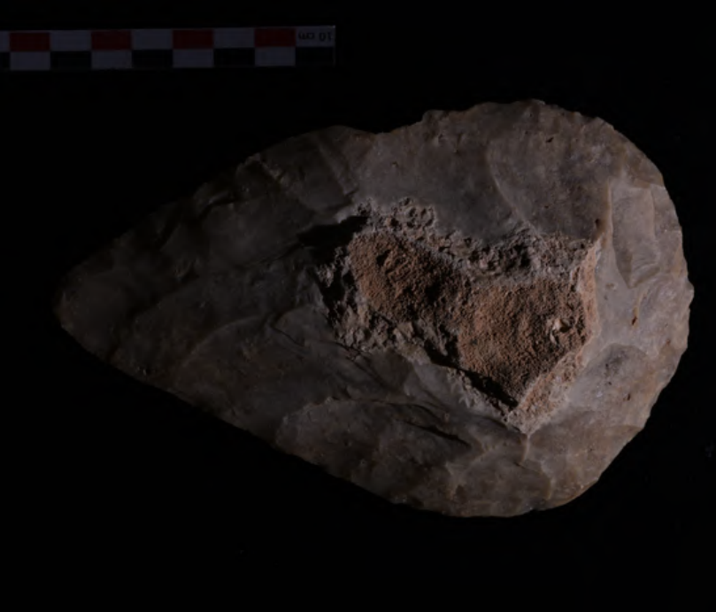
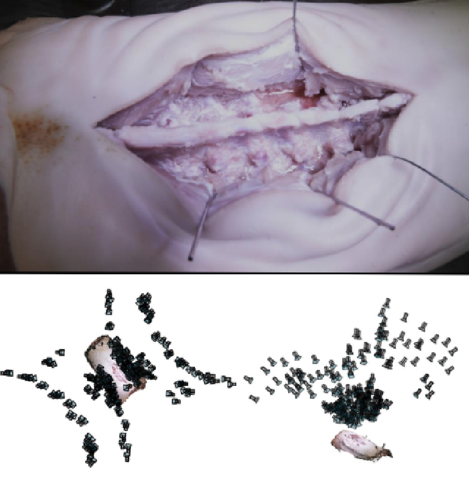
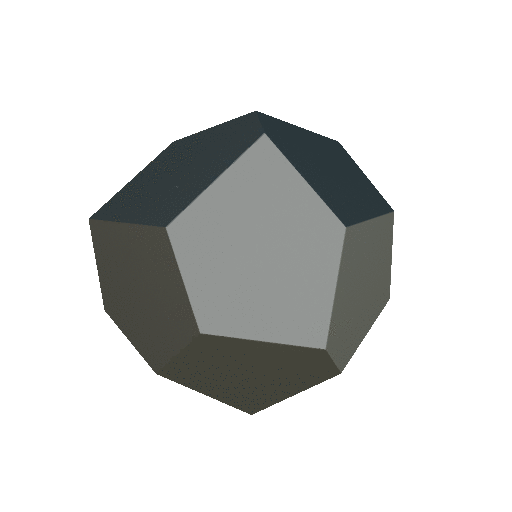
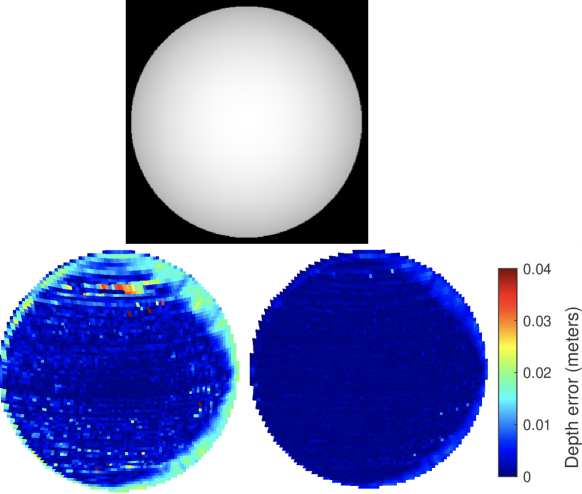
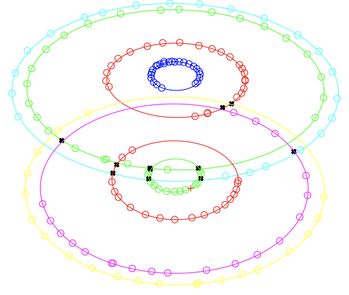

|
Baptiste Brument I'm a PhD student at IRIT in Toulouse, France, where I work on 3D reconstruction from optical images. More precisely, I'm working on the MVPS problem and neural rendering techniques. My supervisors are Lilian Calvet and Jean-Denis Durou. |
Research |
2025 |
|
|

|
Assessing the Quality of 3D Reconstruction in the Absence of Ground Truth: Application to a Multimodal Archaeological Dataset
Benjamin Coupry, Baptiste Brument, Antoine Laurent, Jean Mélou, Yvain Quéau, Jean-Denis Durou WACV, 2025 CVF / BibTeX A methodology to evaluate 3D reconstruction quality without ground truth reference, applied to archaeological artifacts captured using multiple imaging techniques. |
|

|
Acquiring Submillimeter-Accurate Multi-Task Vision Datasets for Computer-Assisted Orthopedic Surgery
Emma Most, Jonas Hein, Frédéric Giraud, Nicola Cavalcanti, Lukas Zingg, Baptiste Brument, Nino Louman, Fabio Carillo, Philipp Fürnstahl, Lilian Calvet IPCAI, 2025 arXiv / BibTeX A comprehensive approach for acquiring submillimeter-accurate multi-task vision datasets for computer-assisted orthopedic surgery applications. |
2024 |
|

|
Stéréophotométrie avec estimation locale de l'éclairage - Application à la reconstruction 3D du patrimoine archéologique
Benjamin Coupry, Jean Mélou, Antoine Laurent, Baptiste Brument, Pierre Gurdjos, Yvain Quéau, Jean-Denis Durou RFIAP, 2024 HAL / BibTeX Combinaison de photogrammétrie multi-vues et stéréophotométrie pour obtenir des reconstructions 3D à la fois précises et détaillées en estimant l'éclairage local. |

|
RNb-NeuS: Reflectance and Normal-based Multi-View 3D
reconstruction
Baptiste Brument*, Robin Bruneau*, Yvain Quéau, Jean Mélou, François Bernard Lauze, Jean-Denis Durou, Lilian Calvet CVPR, 2024 Project page / CVF / arXiv / BibTeX A versatile paradigm for integrating multi-view reflectance and normal maps acquired through photometric stereo. |

|
Multi-view stereo of an object immersed in a refractive medium
Robin Bruneau, Baptiste Brument, Lilian Calvet, Matthew Cassidy, Jean Mélou, Yvain Quéau, Jean-Denis Durou, François Bernard Lauze JEI, 2024 HAL / SPIE / BibTeX An extended multi-view stereo technique to reconstruct objects within a transparent, refractive medium by modeling the refractive interface's geometry and solving it using a discrete method validated on synthetic and real data. |
2023 |
|
|

|
A shape-from-silhouette method for 3D reconstruction of
a convex polyhedron
Baptiste Brument, Lilian Calvet, Robin Bruneau, Jean Mélou, Simone Gasparini, Yvain Quéau, François Bernard Lauze, Jean-Denis Durou QCAV, 2023 HAL / SPIE / BibTeX A pipeline to recover precisely the geometry of a convex polyhedral object from multiple views under circular motion. |
|

|
Multi-view Normal Estimation -- Application to Slanted
Plane-Sweeping
Lilian Calvet, Nicolas Maignan, Baptiste Brument, Silvia Tozza, Jean-Denis Durou, Yvain Quéau SSVM, 2023 HAL / Springer / BibTeX The paper presents a method to estimate 3D surface normals from two views with known camera poses, enhancing inter-image homography and improving photo-consistency in the "plane-sweeping" method, |
2021 |
|
|

|
Reconstruction 3D d'un polyèdre convexe à partir de ses
silhouettes
Baptiste Brument, Lilian Calvet, Jean Mélou, Jean-Denis Durou ORASIS, 2021 HAL / BibTeX Reconstruction 3D d'un objet immergé dans un milieu réfringent, en utilisant un dioptre assimilé à un polyèdre convexe placé sur une table tournante, avec l'estimation de sa géométrie à partir des silhouettes capturées par une caméra statique. |
| * Equal contribution | |
|
This website is inspired from Jon Barron's. Last updated February 2025. |